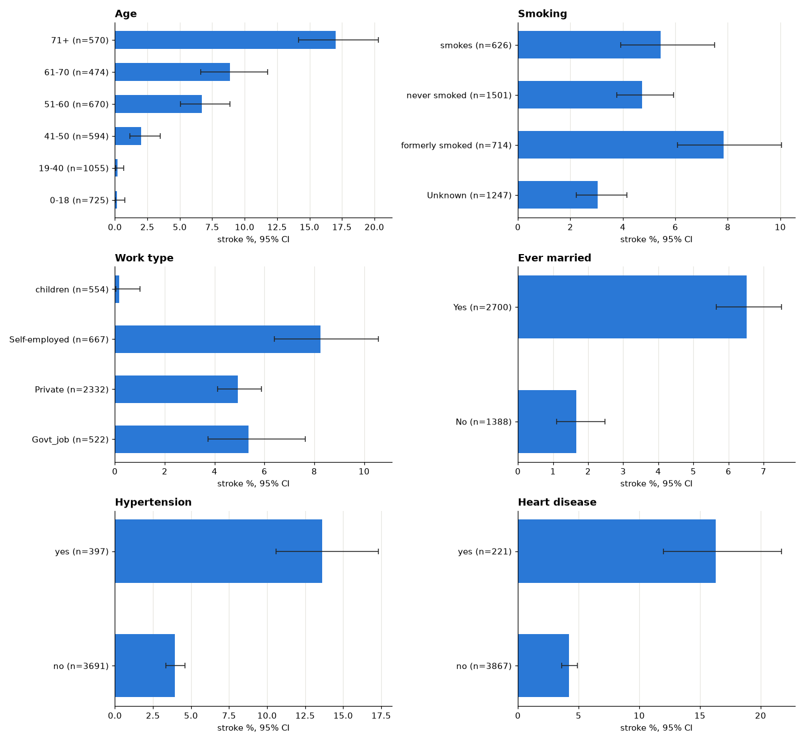
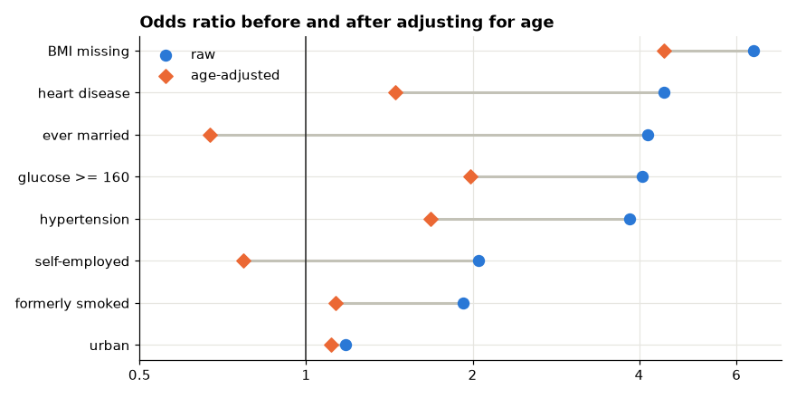

StrokeSense AI: a leakage-tested study of stroke prediction. Academic project for Hanna Abi Akl, November 2026. Author: maryembrik.
5,110 people, 249 strokes (4.87%). No duplicate rows; all rows kept. BMI is blank for 201 people. Accuracy is uninformative at this prevalence: predicting "no stroke" for everyone scores 95.1%, so PR-AUC is primary. Data were split 80/20, stratified, seed 42: 4,088 development (199 strokes) and 1,022 test (50). All choices used development data only. Early integrity and target summaries covered all rows, including test labels; no model used them.

"Ever married" looks like a strong risk factor (odds ratio 4.14), but the sign reverses once age is included (0.67). It is mostly a proxy for age.

In development data BMI is blank for 37 of 199 people with stroke (18.6%) and 133 of 3,889 without (3.4%). Filling blanks with a single value lets a tree isolate them. Random plausible filling, or removing BMI, removes the gain (mean PR-AUC, fixed settings):
| Model | Blank = median | Blank = random draw | BMI removed |
|---|---|---|---|
| Constrained boosting | 0.214 | 0.165 | 0.174 |
| XGBoost | 0.207 | 0.163 | 0.172 |
| CatBoost | 0.188 | 0.165 | 0.169 |
| Logistic, 9 inputs | 0.186 | 0.184 | 0.186 |
| Age only | 0.169 | 0.169 | 0.169 |
This is a missing-data artifact. It does not prove why values are missing, nor conventional target leakage. We removed BMI. The price: people with no BMI are under-predicted (8.5% expected, 21.8% observed).
Final features: age, average glucose, hypertension, heart disease. Repeating stability selection inside 20 outer folds chose age 20 times, glucose 13, hypertension 12, heart disease 3. Heart disease stays partly for clinical plausibility. Nested selection gives PR-AUC 0.174, against 0.190 for the four features chosen after exploration, so 0.190 is probably optimistic.
Ten models, 4 × 5-fold cross-validation, with thresholds chosen inside training folds (target sensitivity 80%). Tuned models also choose settings and feature set there; the three fixed rows (selected, Logistic 9, age only) are not tuned. No resampling: SMOTE raised the mean predicted risk to about 32% against a true 4.9%. Differences use Nadeau-Bengio corrected errors; every interval against the selected model includes zero. Logistic regression was chosen for simplicity and calibration, not superiority.
| Model | PR-AUC | ROC-AUC | Sensitivity | Specificity | Precision | PR gap (train − unseen) |
|---|---|---|---|---|---|---|
| Logistic 4, selected | 0.190 | 0.842 | 79.3% | 73.3% | 13.2% | -0.008 |
| Logistic | 0.187 | 0.839 | 80.8% | 72.8% | 13.2% | +0.000 |
| Logistic 9 | 0.186 | 0.839 | 79.9% | 73.1% | 13.2% | +0.006 |
| CatBoost | 0.186 | 0.840 | 79.1% | 73.7% | 13.3% | +0.016 |
| EBM monotone | 0.185 | 0.838 | 79.8% | 72.4% | 12.9% | +0.007 |
| HGB monotone | 0.180 | 0.838 | 81.0% | 72.7% | 13.2% | +0.027 |
| XGBoost | 0.178 | 0.833 | 80.3% | 72.0% | 12.8% | +0.038 |
| Balanced RF | 0.176 | 0.837 | 81.9% | 70.9% | 12.6% | +0.032 |
| Random Forest | 0.174 | 0.834 | 81.0% | 71.2% | 12.6% | +0.049 |
| Age only | 0.172 | 0.836 | 80.5% | 71.5% | 12.6% | -0.005 |
The model and its 5.175% threshold were frozen before the test set was scored. The columns are separate evaluations. Test ranking intervals use 4,000 bootstrap resamples, rates use Wilson intervals.
| Metric | Development CV | Test (95%) | Age only, same test (95%) |
|---|---|---|---|
| PR-AUC | 0.190 | 0.259 (0.168–0.372) | 0.204 (0.140–0.297) |
| ROC-AUC | 0.842 | 0.840 (0.777–0.893) | 0.834 (0.772–0.887) |
| Brier score | 0.043 | 0.041 (0.031–0.052) | 0.042 (0.032–0.053) |
| Sensitivity | 0.793 | 0.800 (0.670–0.888) | 0.840 (0.715–0.917) |
| Specificity | 0.733 | 0.740 (0.711–0.766) | 0.719 (0.690–0.746) |
| Precision | 0.132 | 0.137 (0.102–0.181) | 0.133 (0.100–0.175) |
| F1 | 0.226 | 0.233 | 0.230 |
| False alarms / missed strokes | 1036.5 / 41.2 (of 4,088) | 253 / 10 (of 1,022) | 273 / 8 |
Test PR-AUC is above the development figure, but that figure lies inside the test interval: with 50 strokes this is consistent with sampling variation. Each model uses its own threshold from the same rule, so age-only catches 42 with 273 alarms while the four-feature model catches 40 with 253. The model expected 49.8 test strokes; 50 occurred (calibration slope 1.07). On development data, among people within three years of the same age, the model ranks stroke pairs better than age by 0.061 (95% 0.015 to 0.104).
| Age | Development strokes caught | Test strokes caught | Test people flagged |
|---|---|---|---|
| 40 or under | 0.0 of 3 | 0 of 5 | 0 of 464 |
| 41–60 | 19.0 of 57 | 2 of 7 | 43 of 298 |
| 61–70 | 41.8 of 42 | 7 of 7 | 110 of 120 |
| 71+ | 97.0 of 97 | 31 of 31 | 140 of 140 |
Overall sensitivity of 80% hides that strokes at 60 or under are mostly missed while nearly everyone older is flagged. Age-specific thresholds were not added: they would be another unvalidated layer. Other limits: unknown data collection and follow-up, no external validation, few strokes per subgroup.
This is an educational simulation, not a medical diagnosis or a validated risk calculator.